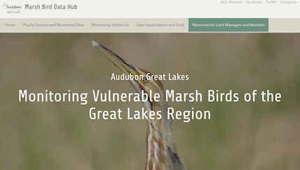
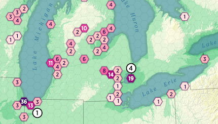
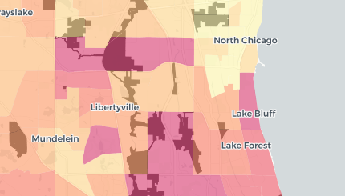
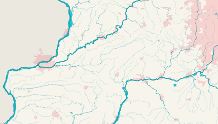
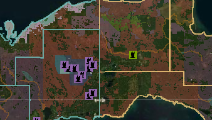
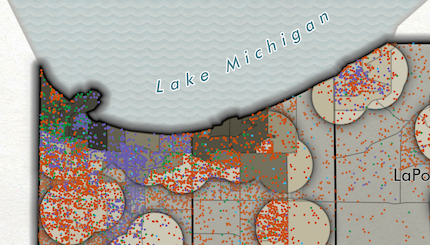
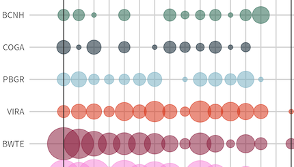
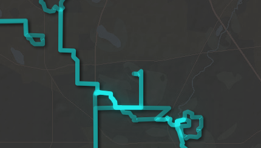
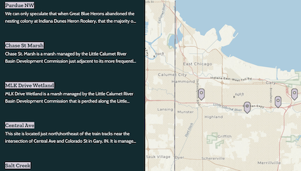

Portfolio

Marsh Bird Data Hub
Website
ArcGIS Hub, ArcGIS Pro, ArcGIS Experience Builder, ArcGIS Dashboards, Survey123

AGL Project Sites
Static Map
ArcGIS Pro

Parks & Income
Story Map
CARTO

Illinois Waterways
Static Map
QGIS

Spring Peak Bird Migration
Static Map
ArcGIS Pro

Black Tern Priority Sites
Web Map
ArcGIS Pro, ArcGIS Online Web AppBuilder

Race & Toxic Air Pollution in NW Indiana
Static Map
ArcGIS Pro, Adobe Illustrator

Calumet Indiana Marsh Bird Observations
Data Visualization
R

Bike Rides
Web Map
ArcGIS Experience Builder, ArcGIS Online, ArcGIS Field Maps

Colonial Nesting Waterbirds in NW Indiana
Story Map
ArcGIS StoryMaps, ArcGIS Online